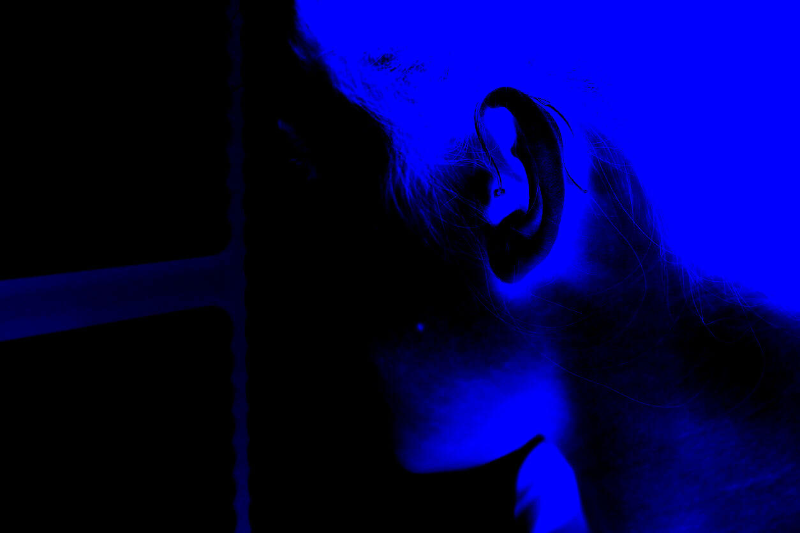
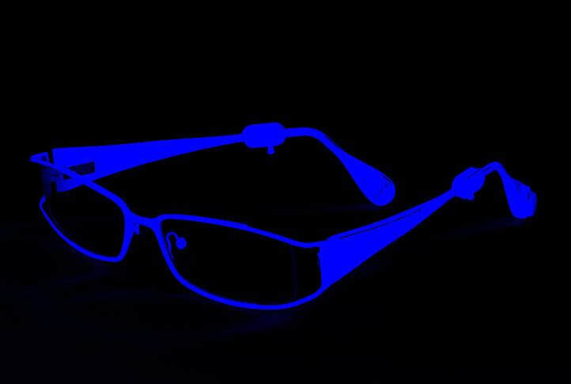
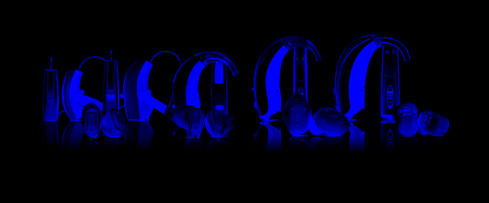
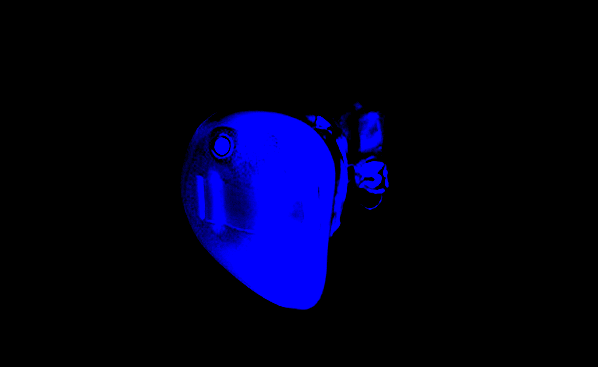

Les solutions auditives actuelles
L’audition est un sens complexe à tel point que deux individus aux pertes d’audition identiques n’accepteront pas le même réglage ni le même appareil pour obtenir satisfaction.
D’autres critères comme l’âge, l’ancienneté de la perte, la capacité d’acceptation du système auditif propre à chacun, autant d’éléments déterminant lors du choix de l’aide auditive. Pour réussir votre adaptation, il est donc primordial de demander conseil à un audioprothésiste qualifié, qui vous préconisera les aides auditives les plus appropriées à vos besoins.
Les aides auditives
Depuis l’apparition du numérique en 1998, le marché de l’audition s’est vu totalement transformé. Véritables concentrés de technologie, les aides auditives sont devenues extrêmement performantes et quasi invisibles.
Il existe toujours des solutions adaptées quelle que soit votre type de perte auditive, votre style de vie, vos préférences personnelles, votre âge ou votre budget.
Agréé par les plus grandes marques d’aides auditives, les dernières innovations technologiques disponibles dans le secteur de l’audition sont issues de la recherche technologique.
TECHNIQUE INNNOVANTE

Les aides auditives modernes sont petites, confortables et d’une discrétion extrême. Elles améliorent les capacités auditives, la reconnaissance vocale et le confort d’audition.
Des fonctions révolutionnaires
Une aide auditive numérique ne se contente plus d’amplifier les sons.
Certains centres attachent une grande importance à sélectionner les systèmes auditifs intégrant les meilleurs traitements adaptatifs à l’environnement.
En effet aujourd’hui il existe une intelligence artificielle au cœur des appareils auditifs permettant de s’adapter aux environnements sonores et donc à atténuer le bruit tout en faisant émerger la parole.
La compréhension dans le bruit étant la gêne principale de tout malentendant, il est donc primordial de choisir son aide auditive avec soi.
Les mini-contours
Il s’agit de la solution actuelle la plus polyvalente destinée aux pertes légères, moyennes et sévères.
Son concept permet d’allier discrétion, performance auditive et confort d’écoute.
L’atout initial de cette innovation était de permettre la compensation des baisses auditives n’affectant que les fréquences aigues. En effet l’électronique de l’aide auditive étant principalement déportée derrière le pavillon de l’oreille, il est possible de laisser les conduits auditifs totalement ouvert afin de conserver une écoute naturelle des fréquences graves tout en corrigeant les fréquences aigues.
Les dernières recherches permettent aujourd’hui de conserver les atouts de confort, discrétion, performance tout en étendant la plage d’application aux surdités sévères.
La lunette auditive
Ce système créé en 2007 par GrandAudition permet désormais d’intégrer dans une branche de lunette vos mini contours en les clipsant.
Ainsi, vos aides auditives deviennent totalement invisibles.
Cette innovation technologique facilite la manipulation des appareils tout en apportant une sécurité contre la perte.
MASQUEUR D’ACOUPHENE

Depuis 2013, nous proposons aux personnes soucieuses de diminuer la gêne induite par les acouphènes un choix d’aides auditives intégrant un masqueur d’acouphène ultra performant.
Partant du principe que chaque acouphénique est unique et revêtit une part importante de subjectivité, nous proposons pour la première fois d’impliquer la personne dans le réglage de son masqueur.
Par l’intermédiaire d’une tablette, la personne acouphénique ajuste le réglage de son acouphène de façon objective. Cette étape préalable permet à l’audioprothésiste de tenir compte du ressenti du patient et de l’intégrer lors des réglages.
Les intra auriculaires
Ces aides auditives sont entièrement logées dans votre conduit auditif, et sont réalisées sur-mesure dans nos laboratoires intégrés à partir de l’empreinte en silicone de votre oreille. Suite à la prise d’empreintes, une coque en résine est réalisée dans laquelle est intégrée une puce électronique, un microphone et un écouteur.
L’intra auriculaire est la solution idéale pour les pertes auditives légères ou moyenne qui concernent l’ensemble des fréquences, graves comme aigues, et ce dans des proportions variables, ce qui se traduit souvent par une gêne sociale moyenne à importante.
La solution intra auriculaire est à éviter pour les personnes ayant un conduit auditif externe trop étroit, trop court ou encore avec une sécrétion de cérumen trop importante.
Ces technologies peuvent être réalisées sur mesure et réparées dans certains centres munis d’un laboratoire intégré.
Les contours d’oreilles
En général de forte puissance, c’est la solution idéale pour les pertes auditives sévères à profondes ou pour les personnes ayant des problèmes de manipulation. Tout le système électronique de l’aide auditive se situe derrière l’oreille et le son est conduit au tympan par un embout réalisé sur-mesure dans nos laboratoires.
Aides rechargables
Pour les personnes à mobilité réduite, présentant des troubles de la préhension Parkinson, Arthrose ou autres, ou tout simplement par soucis de simplicité au quotidien, il est possible d’envisager un chargeur compatible avec certaines aides auditives.
Plus besoin de devoir changer la pile régulièrement, ni d’arrêter et de mettre en marche les appareils chaque jour.
Il suffit pour cela de déposer vos aides auditives dans le boitier prévu à cet effet, et de les récupérées opérationnelles le lendemain matin.
CIC 1H 3D

CIC 1H 3D est l’aide auditive la plus petite et la plus perfectionnée au monde. La discrétion et le confort sont maximum. La qualité sonore n’est pas en reste puisque les nouvelles puces élaborées marquent une rupture technologique en ce qui concerne la compréhension de la parole dans le bruit et l’adaptation de l’environnement acoustique à votre audition.